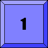
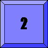
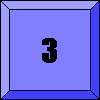
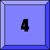
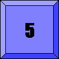
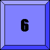
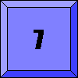
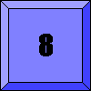

|
|||||||
| [ Home ] | [ Software ] | [ Curriculum ] | [ Hardware ] | [ Community ] | [ News ] | [ Publications ] | [ Search ] |
|
Pyro Module AI: SearchThis module discusses search, followed by an assignment on the Sliding Blocks Puzzle.
Assignment: Sliding Blocks PuzzleThis puzzle consists of a 3 x 3 board with eight numbered tiles and a blank space. A tile adjacent to the blank space can slide into the space. The object is to figure out the steps needed to unscramble the tiles to reach the goal configuration. For this problem, a state should specify the configuration of the eight tiles and the blank space on the board. The operators are most easily represented as moving the blank up, down, left, or right, rather than creating operators for each of the numbered tiles. For example, suppose we wanted to get from the start state to the goal state given below:
1 2 3 1 2 3 8 6 8 4 7 5 4 7 6 5 Start Goal We could accomplish this with the following sequence of operators on the blank:
1 2 3 RIGHT 1 2 3 DOWN 1 2 3 LEFT 1 2 3 UP 1 2 3 8 6 ---> 8 6 ---> 8 6 4 ---> 8 6 4 ---> 8 4 7 5 4 7 5 4 7 5 7 5 7 6 5
Part 1: Uninformed Search
nw northwest element n north element ne northeast element w west element c central element e east element sw southwest element s south element se southeast element Values should be the numbers 1 through 8 for the puzzle pieces or a space character for the blank. For example, the above goal state would be created by calling:
>>> EightPuzzleState(1, 2, 3, 8, ' ', 4, 7, 6, 5) You may represent 8-puzzle states internally however you like, but a simple list representation is probably easiest. If you choose this approach, you may find it convenient to also keep track of the current position of the blank as a separate state variable. You must implement a {{__eq__}} method to test equality. Import your new file from Search.py by inserting:
from EightPuzzleState import * An 8-puzzle state should provide a method called applyOperators(), which returns a list of (state, action) pairs representing the new states generated by applying all operators to the original state. Each action is a string describing the move that generated the associated state, and should be of the form "slide 3 to the left", "slide 8 up", etc. Also you should define a __repr__ method to use for program output. Probably the most concise description is simply a picture of the board configuration, as in the above examples. Finally, add a method name getTile(x,y) that will return the item in row y and col x. So, in review, your job is to complete this template:
from Search import *
class EightPuzzleState:
def __init__(self, nw, n, ne, w, c, e, sw, s, se):
DO-SOME-INITIALIZATION
def applyOperators(self):
# returns [(EightPuzzleState, description), ...]
return LIST-OF-POSSIBLE-MOVES
def __eq__(self, other):
# returns boolean value
return EQUAL?
def __repr__(self):
return STRING-REPRESENTATION-OF-STATE
def getTile(self, x, y):
"""
This is used in the tile displaying program below.
"""
return ITEM-IN-POSITION-X-Y
goal = EightPuzzleState(1,2,3,8,' ',4,7,6,5)
A = EightPuzzleState(1,3,' ',8,2,4,7,6,5)
B = EightPuzzleState(1,3,4,8,6,2,' ',7,5)
C = EightPuzzleState(1,3,' ',4,2,5,8,7,6)
D = EightPuzzleState(7,1,2,8,' ',3,6,5,4)
E = EightPuzzleState(8,1,2,7,' ',4,6,5,3)
SolveIt(A, goal)
That's it! You can now test your program on the following starting states A-E (each is progressively harder) using the same goal each time. To save you some typing, code for creating these states is available here: Examples.
1 3 1 3 4 1 3 7 1 2 8 1 2 1 2 3
8 2 4 8 6 2 4 2 5 8 3 7 4 8 4
7 6 5 7 5 8 7 6 6 5 4 6 5 3 7 6 5
A B C D E goal
You may also use PuzzleDisplayerProgram to watch your program move the tiles around. Make sure that the file Search.py imports or defines your search function, and that there is an alias to the search function called SolveIt. For example, if your search function is called BreadthFirst, then you should have:
SolveIt = BreadthFirst
Change the variable SolveIt to a different function to compare:
SolveIt = DepthFirst SolveIt = UniformCost You will also need to define a method called getTile(x, y) that returns the item (number or space) in the x,y position (where upper left-hand corner is 0,0 and the bottom right-hand corner is (2,2)). Finally, save the following gif images in your subdirectory for an additionally nice display:         Save the above PuzzleDisplayerProgram as PuzzleDisplayer.py. To run the program, try:
A -> goal: python PuzzleDisplayer.py 13s824765 1238s4765
B -> goal: python PuzzleDisplayer.py 134862s75 1238s4765
C -> goal: python PuzzleDisplayer.py 13s425876 1238s4765
D -> goal: python PuzzleDisplayer.py 7128s3654 1238s4765
E -> goal: python PuzzleDisplayer.py 8127s4653 1238s4765
1 3 1 3 4 1 3 7 1 2 8 1 2 1 2 3
8 2 4 8 6 2 4 2 5 8 3 7 4 8 4
7 6 5 7 5 8 7 6 6 5 4 6 5 3 7 6 5
A B C D E goal
Specifically, enter this at the prompt:
python PuzzleDisplayer.py 13s824765 1238s4765 where 13s824765 is the start state, and 1238s4765 is the goal state ('s' is the space).
Part 2: A* Search
def Greedy(initialState, goalState, heuristic):
fringe = PriorityQueue(lambda node: node.h)
return HeuristicSearch(initialState, goalState, fringe, heuristic)
def A_star(initialState, goalState, heuristic):
fringe = PriorityQueue(lambda node: node.g + node.h)
return HeuristicSearch(initialState, goalState, fringe, heuristic)
1 2 3 2 6 3 7 3 4 7 4 5 8 4 4 5 6 1 5 6 3 7 6 5 1 8 7 8 2 8 1 2 goal F G H F = EightPuzzleState(2,6,3,4,' ',5,1,8,7) G = EightPuzzleState(7,3,4,6,1,5,8,' ',2) H = EightPuzzleState(7,4,5,6,' ',3,8,1,2) goal = EightPuzzleState(1,2,3,8,' ',4,7,6,5) SolveIt(F, goal)
I = FifteenPuzzleState(5,1,11,7,
9,2,12,4,
13,14,3,10,
8,' ',6,15)
J = FifteenPuzzleState(1,2,7,4,
9,5,8,10,
13,15,6,12,
14,' ',3,11)
K = FifteenPuzzleState(7,9,4,1,
13,6,5,10,
' ',8,3,12,
14,15,2,11)
goal = FifteenPuzzleState(1,2,3,4,
5,6,7,8,
9,10,11,12,
13,14,15,' ')
Part 3: Extra CreditNow use your A* search engine to solve a variant of the sliding-blocks puzzle in which there are nine blocks of different sizes, as well as two independent spaces, as shown below:
+-----+-----+-----+-----+-----+ | | | 4 | | | | 2 | 3 +-----+ 8 | 9 | | | | 5 | | | +-----+-----+-----+-----+-----+ | | | 6 | | 1 +-----+-----------+ | | | 7 | +-----------+-----+-----------+ That is, there is one tile that is 2 x 2 (Tile #1), two tiles that are 1 x 1 (Tiles #4 and #5), four tiles that are 1 x 2 (Tiles #2, #3, #8, and #9) and two tiles that are 2 x 1 (Tiles #6 and #7). In addition, there are two empty 1 x 1 places (to the right of Tile #1). You will need to define a new board representation, new state operators, and a new heuristic evaluation function for the 9-puzzle, but you shouldn't have to modify your search engine. You will also probably need to come up with a different way of printing puzzle states. For testing purposes, define three start states and three goal states of your choosing. Call these states startA9, startB9, startC9, goalA9, goalB9, and goalC9. Call your heuristic function h9. To solve the 9-puzzle, simply invoke A* with the appropriate states and heuristic function:
>>> A_star(startA9, goalA9, h9)
Turning in your homeworkFiles to submit:
You should not make any changes to DataStructures.py, and, therefore, do not have to submit it.
This assignment was based on previous work by Doug Blank, Jim Marshall, Lisa Meeden, David Leake, and Erich Smythe.
Pyro Modules Table of Contents
Modules
Additional ResourcesReference: PyroSiteNotes
|
| [ Home ] | [ Software ] | [ Curriculum ] | [ Hardware ] | [ Community ] | [ News ] | [ Publications ] | [ Search ] |
 View Wiki Source | Edit Wiki Source | Mail Webmaster
View Wiki Source | Edit Wiki Source | Mail Webmaster | |||||||